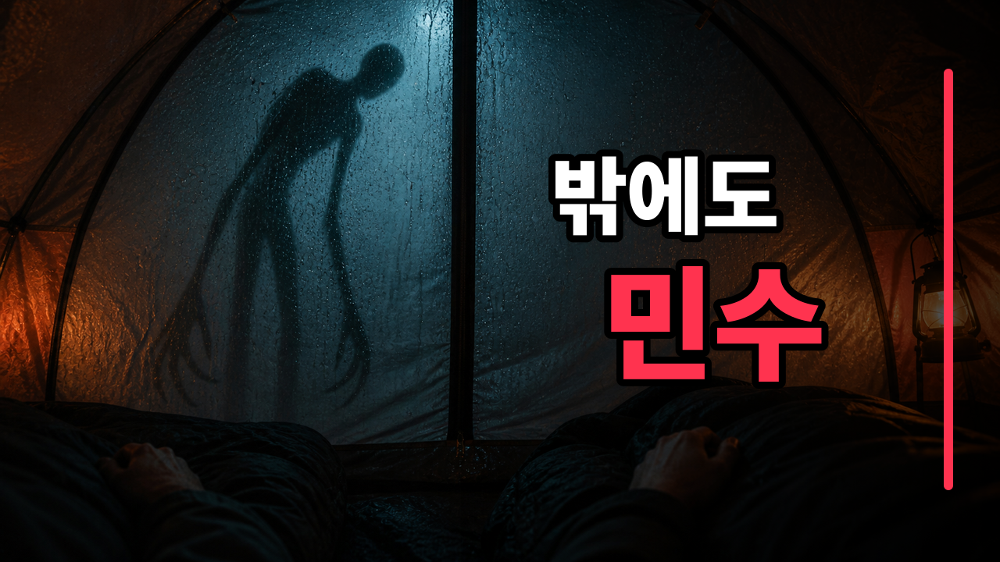
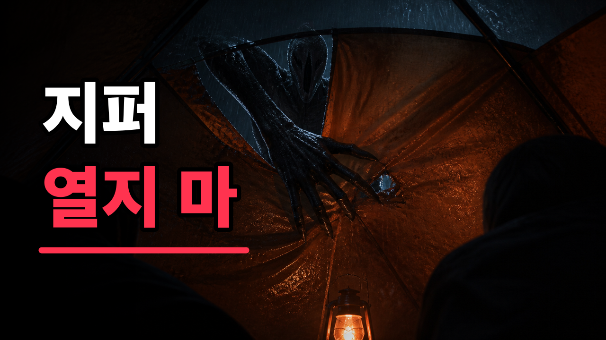

YouTube Long-form Publishing Kit
텐트 밖에서 친구 목소리를 흉내 내는 것
약 7분 3초 · 1920×1080 · 60fps · 창작 괴물 공포
1. 메인 제목
민수는 내 옆에서 자고 있었다… 그런데 텐트 밖에서도 불렀다
2. 추천 제목 5가지
텐트 밖에서 친구 목소리가 들렸다 | 캠핑 괴담
지퍼를 열어 달라는 친구, 그런데 그는 내 옆에 있었다
산속 캠핑장에 우리 목소리를 훔치는 것이 있었다
텐트 바닥 아래 손가락은 여섯 개였다
차 지붕 위에서 내 목소리가 들렸다 | 공포 이야기
3. 썸네일 2종

A안 · 텐트 안과 밖의 동시 존재

B안 · 천막을 찢고 들어온 손
4. 설명란
민수는 내 옆 침낭에서 자고 있었습니다. 그런데 텐트 밖에서도 민수 목소리가 들렸습니다. 비수기 산속 캠핑장에 남은 사람은 우리 둘뿐이었습니다. 빈 세면대에서 돌아온 대답, 텐트 바닥 아래로 밀려 올라온 여섯 손가락, 그리고 두 발에서 네 발로 바뀌어 숲을 달려오는 검은 형체. 우리가 도망친 뒤에도 그것은 자동차 지붕 위에서 목소리를 바꿔가며 따라왔습니다. 전조등 앞에 멈춰 선 순간, 목소리가 어디에서 나오는지 처음 보았습니다. ⏱ 타임스탬프 00:00 텐트 밖의 민수 목소리 00:09 비수기 산속 캠핑장 00:47 빈 세면대에서 돌아온 대답 01:12 텐트 밖과 안의 같은 목소리 01:41 목소리를 훔치는 것 02:07 텐트 바닥 아래 여섯 손가락 03:03 찢어진 텐트 천장 04:01 숲으로 도망친 두 사람 04:40 자동차 지붕의 목소리 05:07 전조등 속 정체 05:57 남겨진 흔적과 영상 06:59 내 목소리로 열린 지퍼 이 작품은 실존 인물·장소·사건과 무관한 창작 공포 픽션입니다. #공포괴담 #무서운이야기 #캠핑괴담 #괴물이야기 #오디오드라마
5. 태그
공포괴담, 무서운이야기, 캠핑괴담, 산속괴담, 텐트괴담, 괴물이야기, 미확인존재, 목소리괴담, 친구목소리, 한국괴담, 심야괴담, 창작괴담, 공포오디오드라마, 잠들기전무서운이야기, horror story korean
6. 고정 댓글
내 옆에서 친구가 자고 있는데 텐트 밖에서 같은 목소리가 지퍼를 열어 달라고 한다면, 여러분은 무엇부터 확인하시겠습니까? 가장 소름 돋았던 장면의 타임스탬프도 함께 남겨주세요.
7. SNS 홍보 문구
X
민수는 내 옆 침낭에서 자고 있었다. 그런데 텐트 밖에서도 민수 목소리가 들렸다. “지퍼 좀 열어. 나 지금 뒤에 뭐가 있어.” ▶ [유튜브 링크] #공포괴담 #캠핑괴담
Threads
비수기 산속 캠핑장에 남은 사람은 둘뿐이었다. 한 사람은 텐트 안에서 자고 있었다. 그런데 똑같은 목소리가 텐트 밖에서 지퍼를 열어 달라고 했다. 당신이라면 지퍼를 열 수 있을까? ▶ [유튜브 링크]
Instagram
내 옆에서 자는 친구. 텐트 밖에서 들리는 같은 목소리. 바닥 아래에서 올라온 여섯 손가락. 우리가 도망치자 그것은 네 발로 숲을 달려왔다. 전체 이야기는 프로필 링크에서 확인하세요. #공포괴담 #무서운이야기 #캠핑괴담 #괴물이야기
8. 업로드 설정
- 카테고리: 엔터테인먼트
- 작품 성격: 창작 괴물 공포
- 자막:
2026-016-camping-mimic-ko.srt업로드 - 재생목록: 공포괴담 본편 · 괴물·미확인 존재 · 캠핑 괴담
- 엔드스크린: 공포괴담 본편 재생목록 또는 다음 단편
- 쇼츠: 업로드 후 관련 동영상으로 이 본편을 지정
9. 게시 최적화 시간
본편: 2026년 9월 2일 수요일 22:00 KST
쇼츠는 본편 공개 45분 뒤인 22:45 KST에 공개합니다. 채널 데이터가 충분해지면 YouTube Studio의 최근 28일 시청자 활동 히트맵에서 가장 진한 시간보다 30~60분 먼저 예약합니다.